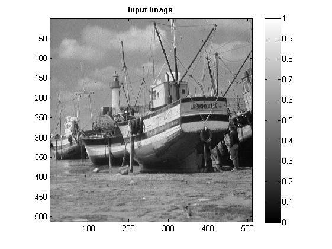
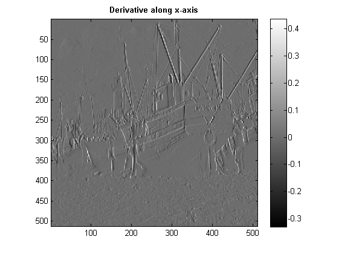
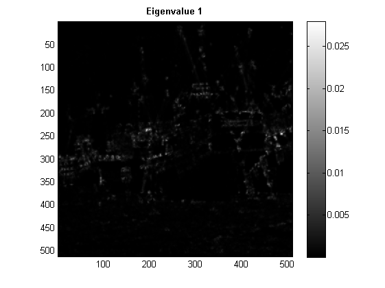
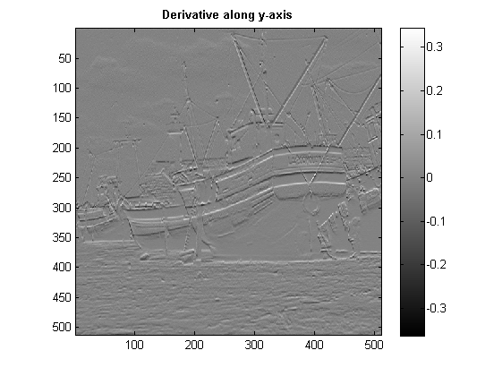
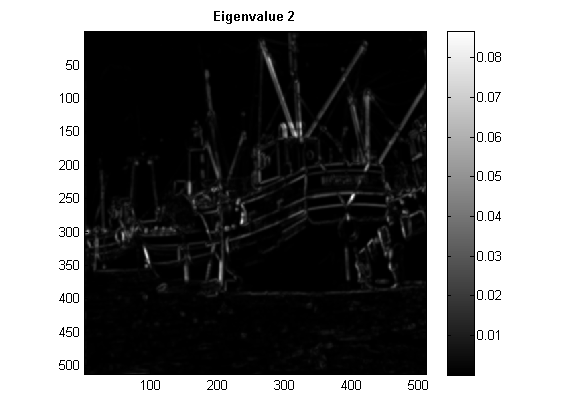
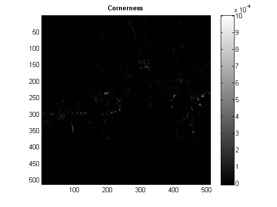

Contents
CS 663 : Digital Image Processing : Assignment 3
Question 2: Harris Corner Detection
tic; num = 200; colorScale = [ [0:1/(num-1):1]' , [0:1/(num-1):1]' , [0:1/(num-1):1]' ]; imgInput = load('../data/boat.mat'); imgInput = double(imgInput.imageOrig/255); [rows, columns] = size(imgInput); sigmaBlur = 0.4; sigmaWeight = 1.5; k = 0.0002; [Ix, Iy, lambda1, lambda2, cornerness] = myHarrisCornerDetector(imgInput, sigmaBlur, sigmaWeight, k); save '../images/Derivative along x-axis' Ix; save '../images/Derivative along y-axis' Iy; save '../images/Eigenvalue 1' lambda1; save '../images/Eigenvalue 2' lambda2; save '../images/Cornerness matrix' cornerness; figure; imagesc(imgInput); colormap(colorScale); colormap gray; daspect ([2 2 2]);% axis tight; title('Input Image', 'FontWeight','bold'); colorbar; figure; imagesc(Ix); colormap(colorScale); colormap gray; daspect ([2 2 2]);% axis tight; title('Derivative along x-axis', 'FontWeight','bold'); colorbar; figure; imagesc(Iy); colormap(colorScale); colormap gray; daspect ([2 2 2]);% axis tight; title('Derivative along y-axis', 'FontWeight','bold'); colorbar; figure; imagesc(lambda1); colormap(colorScale); colormap gray; daspect ([2 2 2]);% axis tight; title('Eigenvalue 1', 'FontWeight','bold'); colorbar; figure; imagesc(lambda2); colormap(colorScale); colormap gray; daspect ([2 2 2]);% axis tight; title('Eigenvalue 2', 'FontWeight','bold'); colorbar; figure; imagesc(cornerness); colormap(colorScale); colormap gray; daspect ([2 2 2]);% axis tight; %t = sprintf('Cornerness for k= %f',k); title('Cornerness', 'FontWeight','bold'); colorbar;     
Constant k in the Cornerness Matrix
k
k = 2.0000e-04
Standard Deviation of the Gaussian used for smoothing
sigmaBlur
sigmaBlur =
0.4000
Standard Deviation of the Gaussian used for weighing function in the structure tensor
sigmaWeight toc;
sigmaWeight =
1.5000
Elapsed time is 13.384963 seconds.